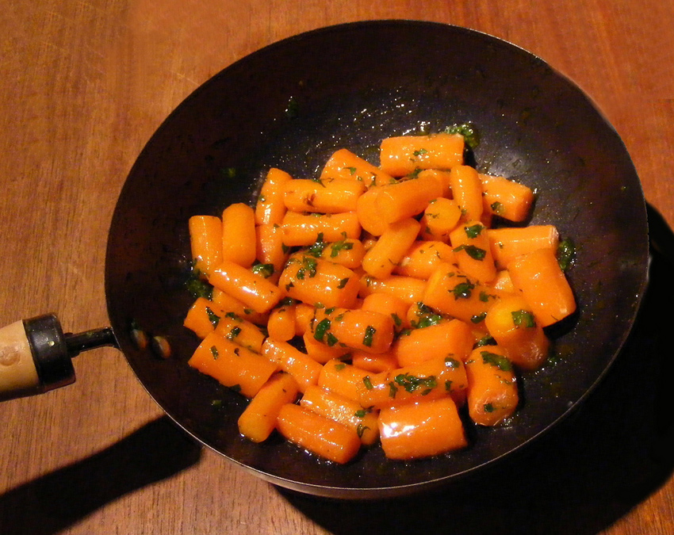

Glazed Carrots

Method
Slowly sauté or stir-fry the carrots in the butter for about 4 minutes
Add the sugar, madeira and orange juice, turn up the heat and allow the liquid to vapourise. Toss the carrots regularly to prevent them from sticking